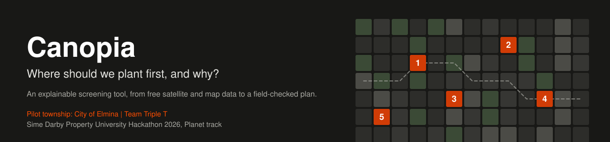
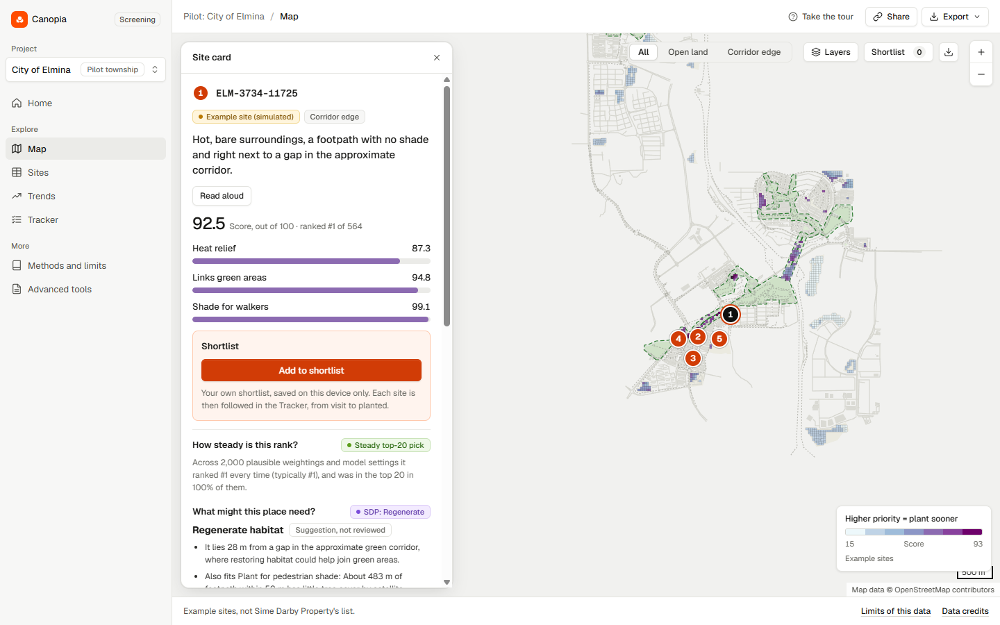
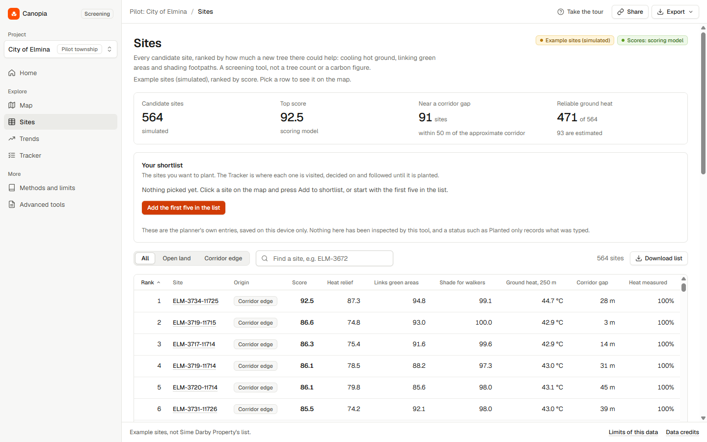
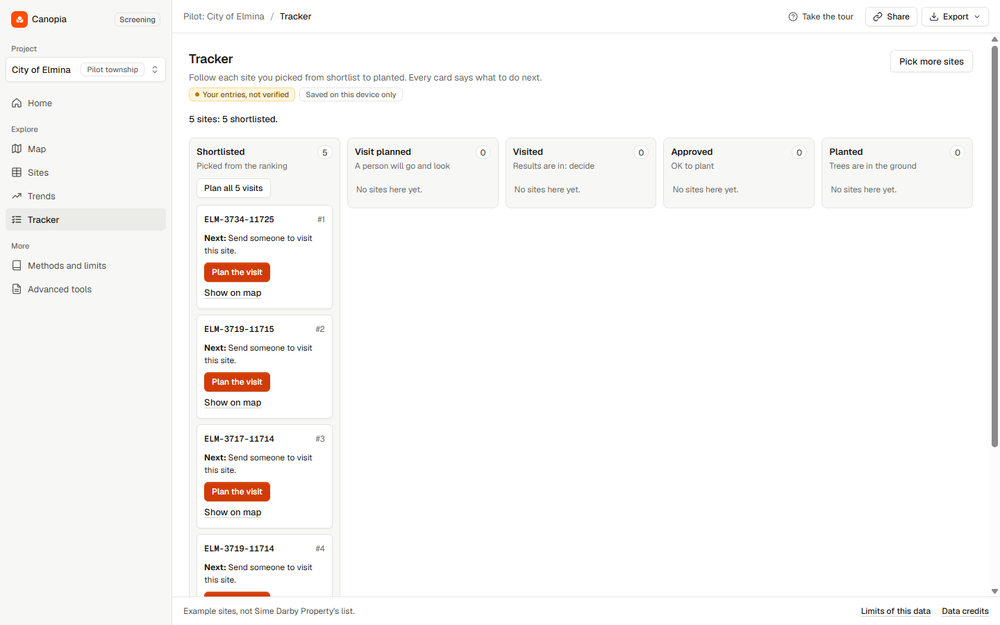
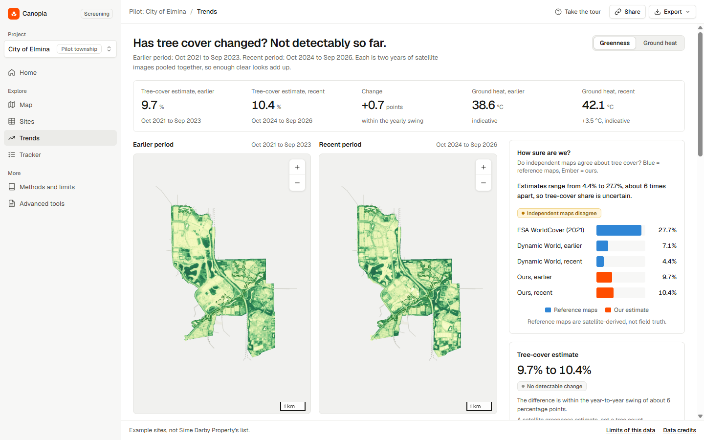

A screening tool that ranks candidate tree-planting sites across a township from satellite measurements, explains every rank, and carries the shortlist through field checks to planting.
Sime Darby Property has a stated target of 50,000 endangered trees by 2030 and, in City of Elmina, a 5 km Urban Biodiversity Corridor linking six parks. Every season someone decides which sites get trees first. Heat on bare ground, gaps in the corridor and unshaded footpaths all matter, and without a repeatable method each choice is hard to explain or compare. Satellite maps do not settle it: independent maps put Elmina's tree cover anywhere from about 4% to 28%.
| User | What they need | What Canopia gives them |
|---|---|---|
| Sustainability and landscape team (primary, a hypothesis to confirm) | decide each season's planting and justify it | a ranked, explained shortlist, adjustable priorities, field sheets and a Tracker to planting |
| Township planners and management | explain why a site was chosen | a reason per site, rank steadiness, a frozen record of the original shortlist |
| Residents and wildlife (beneficiaries) | shade on walking routes, habitat links | scores that target unshaded footpaths and corridor gaps |
| Point | What it means, with a number you can check |
|---|---|
| Measured, not assumed | Every site score is computed from satellite measurements of the township: Sentinel-2 vegetation and Landsat ground heat (cloud-masked two-year medians), plus OpenStreetMap paths, parks and buildings. The sites are simulated; the measurements under them are real. |
| Township-wide, tied to the corridor | All 564 candidate sites across the township are ranked, and closing gaps in the Urban Biodiversity Corridor is one of the three scores. |
| The best set, not just top scores | Choosing 10 sites as a set reaches 51% more exposed footpath and about 3 times the corridor gap of the plain top 10, for a 6-point lower average score. |
| Says how sure it is | 14 of the top 20 stay in the top 20 in at least 80% of 2,000 plausible weightings. The disagreement between independent canopy maps is shown on screen. |
| Protect before planting | 75 sites are already green by satellite and are flagged for an ecologist before any planting, in Sime Darby Property's Avoid, Regenerate and Conserve terms (a screening suggestion, not a finding). |
| From ranking to the ground | A Tracker follows each site from shortlist to visit, decision and planting; blind field sheets and a validated import compare field results with the model. A real site list drops in with one command, tested to reproduce our scores exactly. |
| Built to be checked | One command rebuilds every number from free data in about 4 minutes. Automated tests run on every push, and the published test counts are generated from the code. |
Home, Map, Sites, Trends, Tracker, Methods and limits, and Advanced tools. Everything a planner enters is their own record, saved in the browser; nothing is inspected or approved by the tool.




Screenshots of the deployed app, example sites (simulated), City of Elmina pilot.
The two shaded boxes are the real-world work a pilot with Sime Darby Property adds; everything else runs in the app today.
flowchart TB
subgraph A["Map and Sites: choose"]
direction LR
A1["See the top sites
numbered on the map"] --> A2["Read why a site ranks
one sentence, three scores"]
A2 --> A3["Say what matters
sliders re-rank live"]
A3 --> A4["Compare ways of choosing
top 10 vs best set"]
end
subgraph B["Tracker: check"]
direction LR
B1["Shortlist
original ranking frozen"] --> B2["Plan a visit
blind field sheet"]
B2 --> B3["Record the visit
five checks, evidence"]
B3 --> B4["Decide: approve or set aside
named, dated, with a reason"]
end
subgraph C["Tracker: plant and learn"]
direction LR
C1["Mark planted"] --> C2["Record each tree
species, date, owner"]
C2 --> C3["Tree checks over time"]
C3 --> C4["Survival among
inspected trees only"]
end
A --> B --> C
B -.- F["Real world: a field team
walks the sites"]:::real
C -.- L["Real world: the next season's
shortlist uses what the field showed"]:::real
classDef real fill:#fff4ee,stroke:#d13c06,color:#181816
stateDiagram-v2 [*] --> Shortlisted: picked from the ranking Shortlisted --> VisitPlanned: a person will look VisitPlanned --> Visited: inspector, date, evidence Visited --> Approved: five checks OK + named, dated review Visited --> NotSuitable: named, dated, with a reason NotSuitable --> VisitPlanned: next-ranked replacement Approved --> Planted: a person marks it planted Planted --> [*]: survival from inspections only
The five field checks are land access, utilities, space and soil, maintenance access and existing trees. Each starts as Not checked; completing them is never an approval on its own.
The build turns imagery and map data into versioned files; it needs Earth Engine and the network. The runtime serves those committed files with neither, so the demo works offline and on a read-only host.
Steps 1 to 5 run at build time (Earth Engine and the network). Steps 6 and 7 run anywhere with neither, including the public deployment.
Three scores from eight named inputs, then a weighted total. There are no labels to fit to, so nothing is trained; every number traces to its inputs. The planner can change the three right-hand weights with sliders.
flowchart LR H["Ground heat, 250 m"] -- 0.45 --> C["Heat relief"] G["Low greenness, 250 m"] -- 0.30 --> C BU["Built-up share, 250 m"] -- 0.25 --> C GAP["Near a corridor gap"] -- 0.50 --> K["Links green areas"] PK["Near a park"] -- 0.30 --> K INC["Inside the corridor"] -- 0.20 --> K UN["Unshaded footpath, 50 m"] -- 0.70 --> S["Shade for walkers"] NP["Near a footpath"] -- 0.30 --> S C -- 0.45 --> T["Total score
rank 1 = plant first"] K -- 0.30 --> T S -- 0.25 --> T
Heat, greenness and built-up share are percentile ranks within the township ("hotter than 90% of sites"), because 100 m thermal data supports ranking, not exact temperatures. Distances use a smooth decay. The heat term is pulled towards the middle where ground temperature had to be filled in from neighbouring pixels.
We checked consistency and robustness thoroughly. We have no ground truth, so none of this shows the ranking is right; it shows it is consistent and stable.
| Check | Result |
|---|---|
| Imagery go or no-go, before building anything | GO for both periods and both satellites: only 27 of 144 Sentinel-2 scenes in the baseline were under 40% cloud, yet every pixel had at least 3 clear looks. |
| Canopy threshold sensitivity | About 18%, 10% and 3% canopy at NDVI 0.5, 0.6 and 0.7, with a year-to-year swing of about 5 points. So canopy is used to rank sites, never quoted as a percentage. |
| Independent cross-check | ESA WorldCover about 28%, Google Dynamic World about 7% falling to 4%, ours about 10%. Best agreement at NDVI 0.6 (F1 0.51). |
| Rank steadiness | 14 of the top 20 stay in the top 20 in at least 80% of 2,000 settings of the weights and judgement constants; rank correlation with the median ranking 0.999. |
| Method agreement | A heat-only ranking shares none of our top 20 sites; an equal-weights version shares 18 of 20. The weights matter, which is why the planner sets them. |
| Before and after | Our canopy proxy moved from 9.7% to 10.4%, inside its yearly swing: reported as "no detectable change", not as growth. |
| Reproducibility | A full rebuild took about 4 minutes and reproduced the committed sites; every build carries a data version and stale scores are flagged. |
| Your own site list | Scoring a simulated site's own centre point through the import reproduces its committed scores and rank exactly (automated test). |
| Software quality | Python, model and frontend unit tests run in CI on every push; a real-browser test covers every page, keyboard use, hostile data and an accessibility scan. |
Today Canopia measures reach (what lies near the sites, each footpath point, home and gap counted once), not benefit. For the first 50 sites in the default ranking:
Choosing sites as a set instead of by top score changes what a fixed budget reaches. For 10 sites, all three goals weighted equally:
| Way to choose 10 sites | Footpath, little tree cover | Mapped homes | Corridor gap | Average score |
|---|---|---|---|---|
| Top 10 by score | 2,120 m | 242 | 350 m | 86.2 |
| Spread out (at most 3 per 250 m block) | 2,280 m | 242 | 410 m | 85.6 |
| Best coverage | 3,210 m (+51%) | 262 (+8%) | 1,030 m (+194%) | 80.0 |
| What to measure | Baseline today | How a pilot would measure it | When |
|---|---|---|---|
| Footpath with little tree cover near planted sites | about 65,900 m township-wide; 5,400 m near the first 50 sites | re-run the count on new imagery; timed shade walks on the same routes | each season |
| Planted-tree survival | none | count live and dead trees at planted sites | 6, 12, 24 months |
| Tree cover at planted sites | each site's canopy proxy | field or drone sample at planted and unplanted sites | 12, 24 months |
| Does the ranking point at real shade gaps? | none | blind field sheet for top and lower ranked sites | before planting |
| Corridor gaps closed | about 1,650 m of gaps | re-count against the official corridor polygon | each season |
No targets are set here, because nothing in our data supports a number; the developer's own targets are theirs to set against.
| Tool | Scale | Ranks by |
|---|---|---|
| Tree Equity Score (American Forests) | US census block group | canopy gap plus equally weighted social and heat indicators |
| i-Tree Landscape (USDA Forest Service) | US census block group | user-chosen indices and weights |
| Right Place, Right Tree (Boston, 2020) | census tract | heat vulnerability plus Landsat surface temperature, where planting is feasible |
| Canopia | 30 m candidate site | heat, corridor links and walkers' shade, with rank steadiness and a field loop |
A 2025 comparison of five tools in Austin found they agree on broad areas but differ on specific top sites, which is why Canopia shows how steady each pick is. We do not claim a new satellite method or to beat these tools.
python -m backend.my_sites scores any list of points inside the study area with the same measurements and model, offline.| When | What |
|---|---|
| Now | Prototype live on City of Elmina data with simulated sites; Tracker from shortlist to planted; field sheets ready. |
| Weeks 1 to 4 | Score Sime Darby Property's real site list and swap in the official corridor polygon. The code already supports both. |
| Months 1 to 3 | Walk about 30 sites with a blind field sheet to test whether the ranking reflects real conditions; an ecologist reviews the protect and regenerate suggestions. |
| Planting season | Plant from one season's ranking, re-run it each season, and compare before and after with survey data. |
| Next | Adapt to other Sime Darby Property townships. |
What we need from Sime Darby Property: the planting-site list, the official corridor polygon, the current tree count, and one afternoon of field access.
| Limit | What it means |
|---|---|
| Simulated sites | 30 m cells on OpenStreetMap open land, not a real planting list; OpenStreetMap under-maps parts of the township. |
| Approximate corridor | Built from OpenStreetMap parks: about 2 km of connecting spine against the stated 5 km. Connectivity results inherit this until the official polygon is supplied. |
| Coarse thermal data | Landsat surface temperature is about 100 m native; about 18% of the area is filled from neighbouring pixels for site scoring. |
| Canopy is a proxy | NDVI at or above 0.6, not a tree count; strongly threshold-dependent and noisy year to year. |
| Siting screen | Flags mapped roads, buildings and footpaths near a site; it is not a wildlife assessment. |
| Records are local | Tracker entries are saved in one browser; a shared, audited version is the first thing a real pilot would build. |
Map data (c) OpenStreetMap contributors (ODbL). Contains modified Copernicus Sentinel-2 data (European Space Agency). Landsat 8/9 Collection 2 Level-2 data courtesy of the U.S. Geological Survey. ESA WorldCover and Google Dynamic World used for the cross-check. Processed with Google Earth Engine (noncommercial use). Every figure in this document comes from a file in the repository and can be re-run.